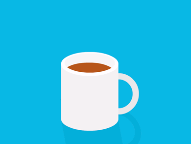

|
En simples palabra es una pagina web que te recordara tareas que tienes que realizar en un dia cualquiera que estara al alcance de la mano y que sera una herramienta super facil de acceder y comoda para el usuario su proposito es terminar con las escusas de la gente que ¡no puedo recordar mis cosas por que tengo muchas que hacer! ¡todo seria mas facil si pudiera organizarme, gracias a TaskRemeider eso acabara muy pronto ya que esta diseñada para recordarte cada vez que entres al movil o computador ,recuerdes las catividades que dejeaste para cualquier dia ya sea salir a caminar,comer,crear tu pagina web en fin no ahi limites por que TaskRemeider las recordara por ti. Por desgracia esta es la primera version que realizo ya que trabajo solo en este proyecto pero prometo realizar mas contenido en algun futuro por ahora es buen momento para disfrutar de esta alpha que me a costado realizar pero que me da orgullo mostrar al publico  Te segimos dejando el link para que descarges el proyecto ya hecho listo para ser ejcutado en el ordenador o movil |
|
Programacion 2020 / TaskRemeider 2020 / Derechos Reservados / alpha 1.0 contactame: creatorapptask@gmail.com O llama al: 7714157693 Estare contestando todas tus dudas 
|